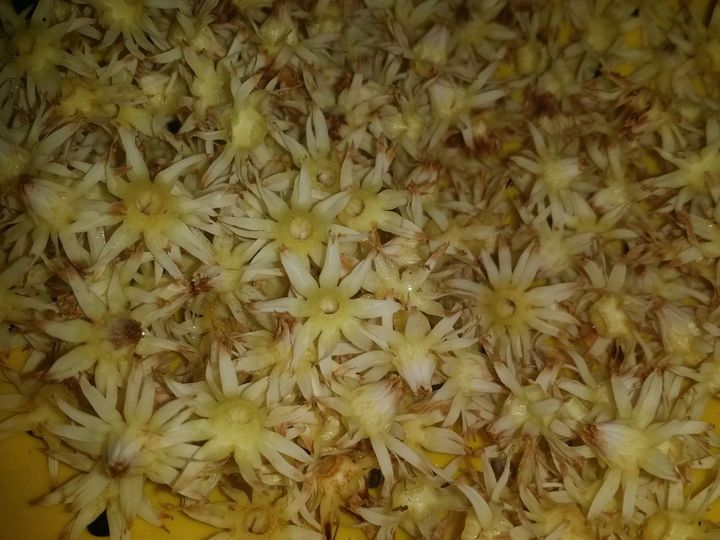
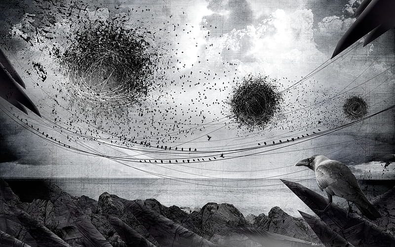

আকাশের নিলাম
আরে আরে সুমতি বানু যে; কেমন আছ বল শুনি,
সোয়া লক্ষ কুটি বছর পর দেখা, না-কি তার-ও বেশি!
তা বটতলায় ঘর বাধার স্বপ্ন'টা কি এখনো আছে! না-কি চকচকে কংক্রিটের মায়ায় হারিয়ে গেছে,
যাই বল; বটতলার ঝর জঞ্জাট থেকে বেচে গেলে,
আচ্ছা বানু আজও কি হেয়ালি দূরত্বে হৃদয়ে ঝর উঠে!
সুমতি বানু
তুমি যে পাশে থাকার শর্তে আকাশটা নিলামে চেয়েছিলে, আকাশ পেয়ে গেছো!
আকাশের নীল কি এখন আর কালো মেঘে ছেয়ে যায় না,
সাদা আঁচল কি বাতাসে ছুটে পালায় না!
কি দামে নিলে আকাশটা.....অর্থ না-কি অগাধ ভালবাসা
সুমতি বানু
তুমি বেচে গেলে, শতবর্ষী বটবৃক্ষ'টা এখন দস্যুদের পেটে
বটবৃক্ষের তলায় এখন দেবদারুর চারা গজিয়েছে, ছায়া নেই!
দেবদারু গাছের কি মায়া! আশেপাশের সব চড়ুইরা বাসা বেধেছে,
কত হাজার হাজার বিশ্বস্ত সংসার,
বিশ্বস্ত! হা; দেখছ না, জিরাফ চূড়া গাছে একটা'ও বাসা নেই
ঝর বাদলের ভয় নেই, তাপ প্রহারের অস্বস্তি নেই।
কে, আমি!
আকাশ কিনার মুরোদ'টা এখনো হয়ে উঠেনি
এই যে দেবদারু গাছটা দেখছ, প্রতিদিন কড়া রোদে চড়ুইদের বিচ্ছেদের অপেক্ষা করি,
সমস্যা কি জানো! ঐদিকে চড়ুইরা কেউ বিচ্ছেদ ঘটায়নি
রোজ ঝগড়া হয়, কিন্তু সূর্যের তেজ কমার আগেই তারা নিস্তেজ হয়।
এ নিয়ে তুমি ভেবোনা, ডানা ছাড়া প্রাণের সান্নিধ্যে আমি থাকছি না
যাই বল; বটতলার ঝর জঞ্জাট থেকে বেচে গেলে,
আচ্ছা বানু আজও কি হেয়ালি দূরত্বে হৃদয়ে ঝর উঠে!
_রিয়াদ
সরল সুন্দর
ইট বালুর ব্যাস্ত নগরে
যদি একমুঠো রুক্ষ বকুল এনে বলি ভালবাসি,
তবে কি মুঠোভরা ভালবাসায় আমায় আপন করে নেবে,
না-কি কংক্রিটের শুষ্ক আঘাতে হৃদয় চূর্ণবিচূর্ণ হবে!
চক্ষু লজ্জার সীমানা ডিঙিয়ে এ আমার প্রথম পদার্পণ।
বড্ড তৃষ্ণা পেয়েছে,
শুষ্ক গলায় যদি দীঘির জলে তৃষ্ণা নিবারণ করি,
তবে কি খুব ঘৃণা জন্মাবে!
অনেকটা পথ হেটে এসেছি, মাসের শেষ পকেট ফুরিয়ে এসেছে,
সকাল রাতে কিচ্ছু খাইনি, বলি; তুমি কি বাদাম খাবে!
একাকাশ স্বপ্ন নিয়ে এসেছিলাম, শব্দদূষণে গুলিয়ে গেছে,
দূষণ, আচ্ছা দূষণ ছাড়া কি সম্পর্ক গড়ে!
চুপ করে আছে যে, বকুল পছন্দ হয় নি, রুক্ষ তাই-না!
শুঁকে দেখো...
অহ শুদ্ধ গোলাপ ছাড়া বুঝি প্রেম হয় না!
ছেঁড়া জুতা! ওই একটু ফেটে গেছে, সারিয়ে নিলেই হবে
তবে হৃদয় ভাঙ্গার ব্যপারটায় খেয়াল রেখো।
শার্টের কুজ! তা ঘষিয়ে নিব; নিবারন কাকা ছুটিতে আছে
তুমি চাইলে সামনের মাসে নতুন নিয়ে নিবো, চার চারটে টিউশন
তবে হৃদয় ভাঙ্গার ব্যপারটায় খেয়াল রেখো।
_রিয়াদ

দস্যুচোখে পাতানো সুখ
যদি হৃদয় বসন্তে কোকিল গান গায়,
তবে ঋতু চক্রের তারতম্যে কেন সে পালিয়ে বেড়ায়!
কর্কশ কাক যখন মাতৃত্বের দহনে গৃহ বন্দী,
মিষ্টি কোকিল তখন যাযাবর জীবন নিয়ে দেশ দেশান্তরে খুঁজে জীবনের সন্ধি।
কাকের বাসায় কোকিল ছানার ধরন গড়নে তারতম্য থাকলেও মাতৃত্বে তারতম্য ঘটেনি, কিংবা বুকচিড়ে খুবলে খায়নি!
যেমনটা জুটে থাকে অন্য পক্ষির ছানাপনার ভাগ্যে,
মুরগির ডানায় প্রকৃতির দখল টিকে গেলেও, নিস্তার নেই কর্কশ কাকের বিষাক্ত থাবায়।
ময়লায় থাকা কাকের বাসা, ময়লায় খুঁজে ভোজ।
মগজ ভর্তি ময়লায় ঠাসা, ময়লায় বুঝে সুখ।
প্রতিবেশীর কি নিদারুণ নিষ্ঠুরতা,
পলাশ তলে ক্ষুধা জিইয়ে রয় অনাহারের কত মুখ
গুগল খোঁজে ছবি লইয়ে ফ্রেম বন্দি থুই।
সখের বাসনায় চৈতন জেগেছে বিড়াল পুষবে জুঁই,
পোষা বিড়ালে তুলে দিয়েছে মুরগির চুটি-বাটি ভর্তি দুধ আর লবণ সিদ্ধ রুই।
পড়শীর উনুনে আগুন জ্বলেনি খুঁজ নেইনি কেউই;
বিলের জলে দুলতে থাকা কলমিলতায় ছুই।
গোয়ালের গরু ধান মাড়িয়েছে, ফসল দিল শুইয়ে,
মনের মধ্যে দেয়নি ব্যথা পাকা ধান খুইয়ে!
পরের গরু ঘাস ছুয়েছে শালিশ দিল বইয়ে
পকেট ফাপা মোড়ল চাচা হাক ছড়িল ক্লান্তির বেটা বুদ্ধিসুদ্ধি দিয়েছ কি খুইয়ে!
ফসল ডগায় শিষ জমেছে জমি দিলে নুইয়ে!
এখন কি ভেবেছ শুনি, জরিমানায় নেই কোন ছাড়াছাড়ি।
মোড়ল ঘোষিল বুঝেছ....................ক্লান্তি বাবু- দুষ্ট গরুর চেয়ে শূন্য গোয়াল ভালো! নালিশ থাকিবেনা কারো,
চাষার ছেলে চাষাই থাকো বর্গায় থাক জিইয়ে।
অন্যের চর্চায় হন্য মুচি বেশ ধরিল সম্রাট লোদী।
ঘরের ডাকাত বোকা খোকা, মাথায় ভর্তি গোবর জটা।
পরের শান্ত ইঁচড়েপাকা! বকে ফেলেছে সমাজ গোটা।
থলের বিড়াল পড়শি'য়ে বাঘ গর্জনে তার লজ্জা নিপাত।
_রিয়াদ
